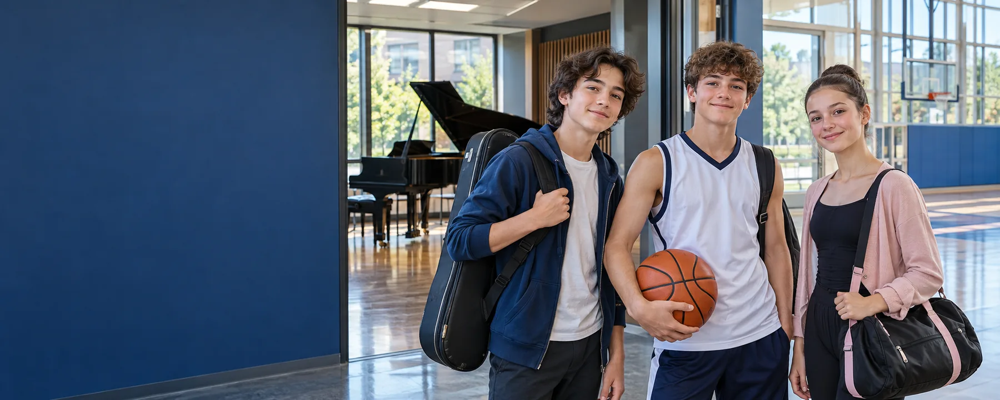
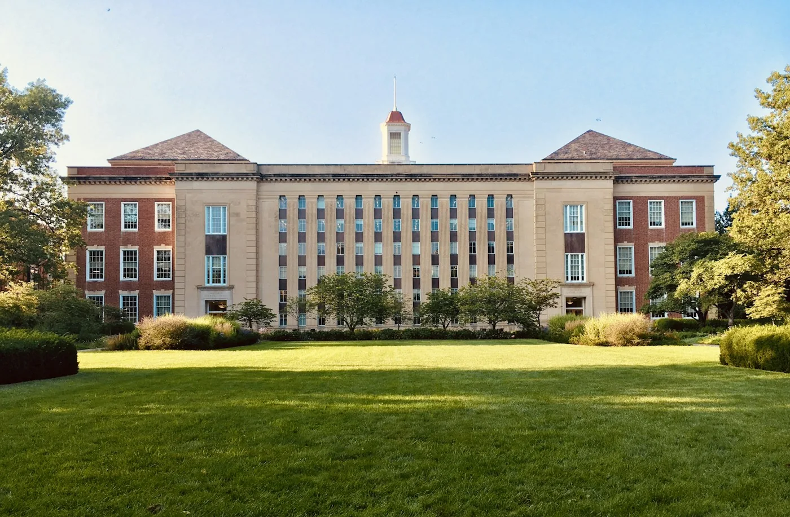
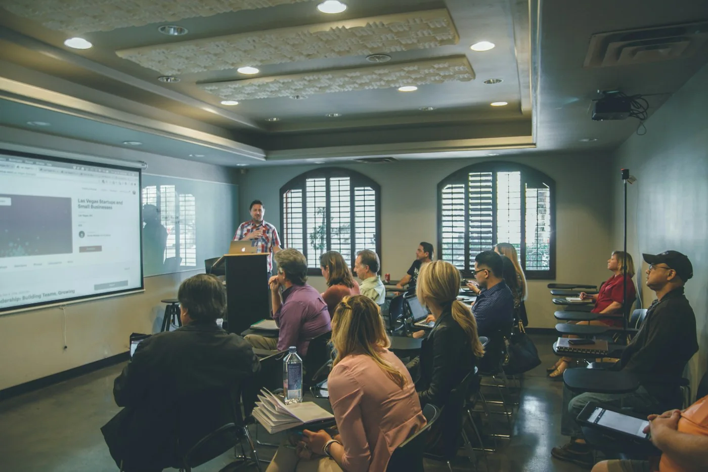
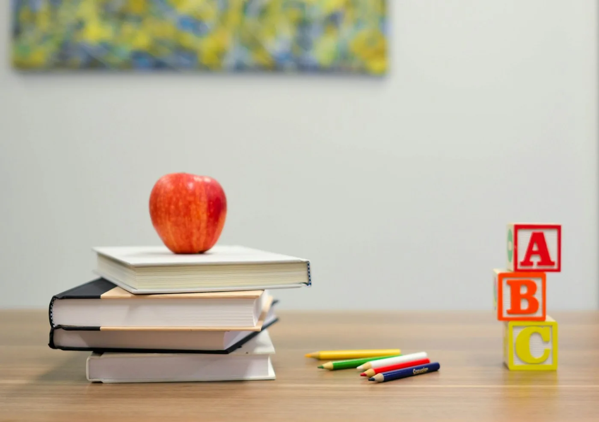
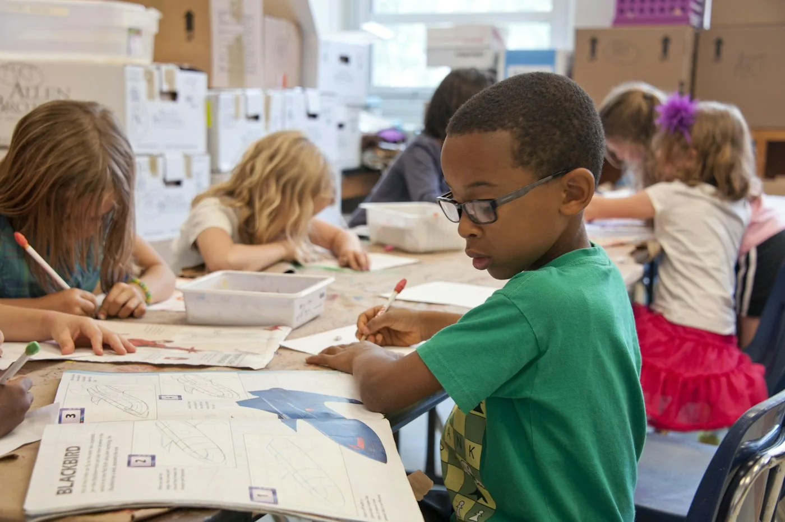
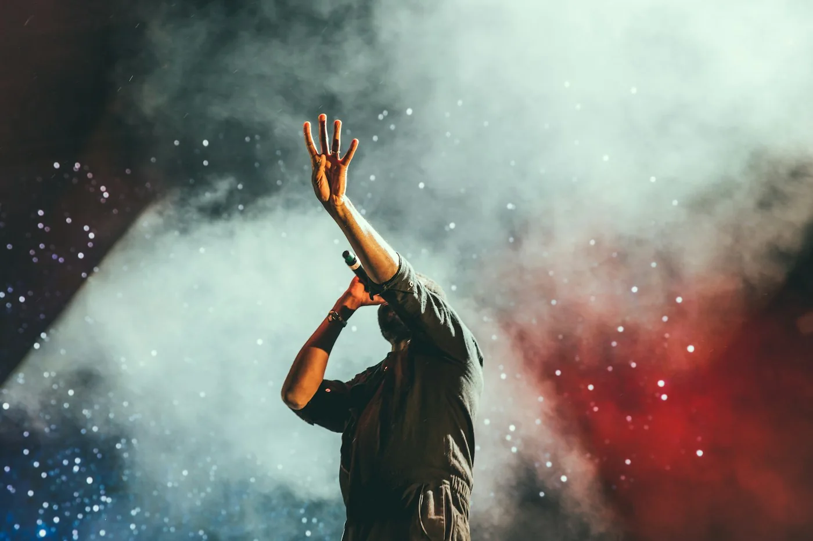
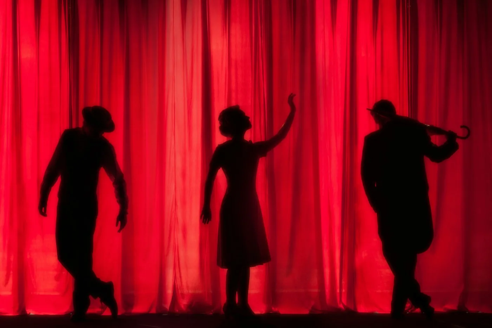
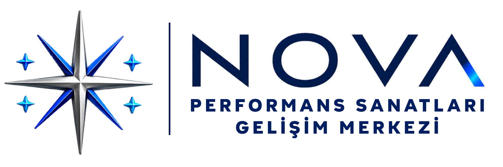

Keşfet
Doğal yatkınlıkları ve potansiyeli tanı.

Yeteneği erken yaşta keşfeden, gelişimi bilimsel olarak izleyen ve öğrenciyi uzun vadeli sanat, spor ve uluslararası eğitim yolculuğuna hazırlayan bütüncül bir sistem.
Her öğrenci, sanat ve spor alanlarındaki doğal yatkınlıkları, gelişim potansiyeli ve bireysel özellikleri doğrultusunda çok yönlü olarak değerlendirilir.

Nova’ya kabul, yalnızca kayıtla değil; ölçme, gözlem ve yetenek değerlendirmesine dayalı seçici bir süreçle gerçekleşir. Amaç, her öğrencinin doğru alanda ve doğru gelişim planıyla ilerlemesini sağlamaktır.

Her öğrenci için güçlü yönlerini ve gelişim ihtiyaçlarını esas alan kişiselleştirilmiş bir eğitim ve gelişim yol haritası oluşturulur.
Teknik eğitim; disiplin, özgüven, yaratıcılık, fiziksel gelişim, iletişim, takım çalışması ve gelecek becerileriyle birlikte ele alınır.
Nova’da eğitim kısa süreli bir kurs anlayışına dayanmaz. Öğrencinin gelişimi yıllar içinde takip edilir; temel eğitimden branşlaşmaya, ileri performanstan üniversite ve kariyer hazırlığına kadar planlanır.

Sahne, festival, müsabaka, turnuva, proje ve uluslararası etkinlikler eğitim sürecinin doğal bir parçasıdır. Öğrenci öğrendiğini gerçek ortamda deneyimler.
Öğrencinin gelişimi yalnızca sonuçlarla değil, süreç boyunca elde edilen performans verileri, portfolyo, gözlem ve dönemsel değerlendirmelerle izlenir.
Eğitim modeli; program geliştirme, ölçme-değerlendirme ve alan uzmanlarının yanı sıra akademisyenler, sanatçılar, sporcular ve antrenörlerin katkısıyla sürekli güncellenir.

Programlar; yurt dışındaki konservatuvarların, sanat okullarının, spor akademilerinin ve üniversitelerin beklentileri dikkate alınarak uluslararası bir perspektifle yapılandırılır.

Nova’nın amacı yalnızca yetenekli çocuklar yetiştirmek değildir. Amaç; yeteneği bilgiye, disipline, performansa, yükseköğretime ve sürdürülebilir bir mesleki geleceğe dönüştürmektir.

Keşifle başlayan, gelişimi izleyen ve öğrenciyi geleceğe hazırlayan yedi adımlı bir yolculuk.
Her çocuk için aynı program değil; kendi potansiyeline uygun gelişim yolu.

Doğal yatkınlıkları ve potansiyeli tanı.
Değerlendirmeyle doğru gelişim yolunu belirle.
Bireysel hedeflerle sağlam bir temel oluştur.
Seçilen alanda bilgi ve beceriyi derinleştir.
Öğrenilenleri sahnede ve sahada uygula.
Gelişimi gözlem ve verilerle takip et.
Portfolyodan yükseköğretime uzanan yolu planla.